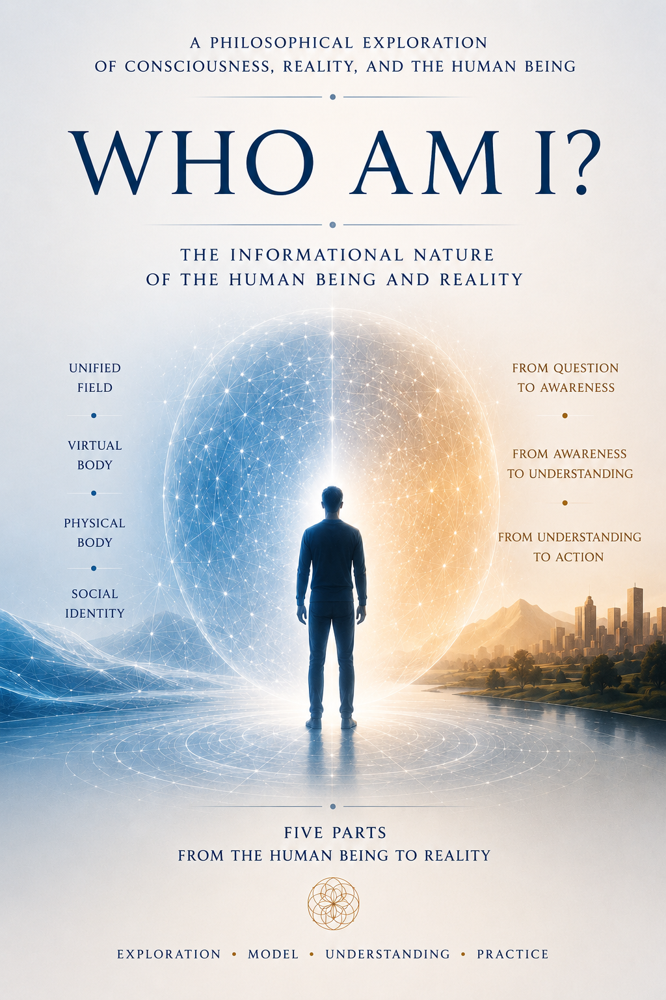

What is the informational nature of reality?
This website presents an informational model of reality that connects
Can information exist before physical reality?
This website presents an informational model of reality that connects consciousness, quantum mechanics, and the concept of Information Qubits within a unified theoretical framework.
Explore the key concepts, read selected articles, and discover the ideas presented in the book.